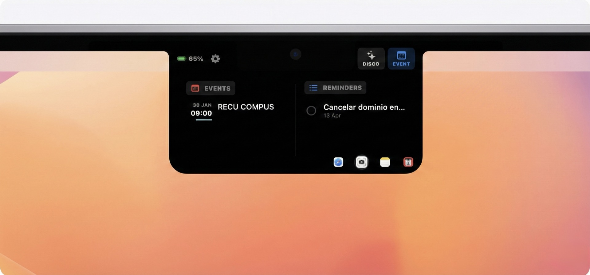
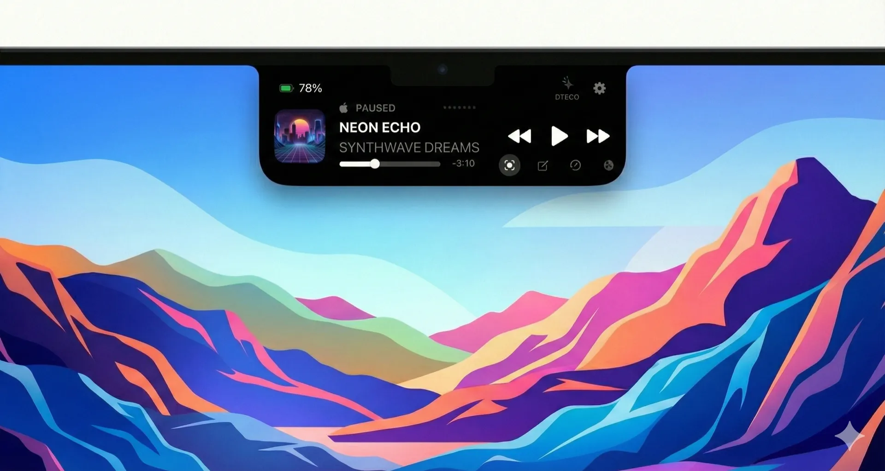
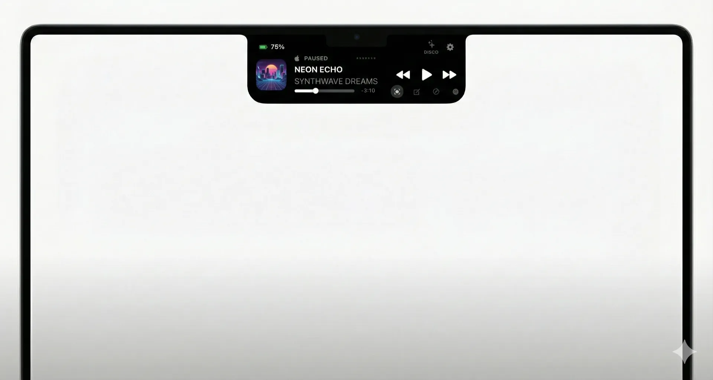
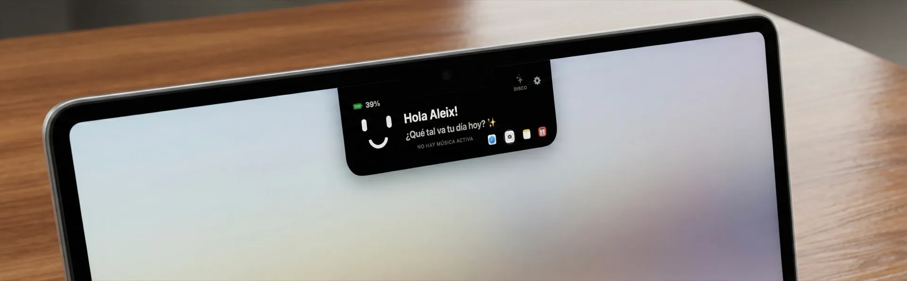
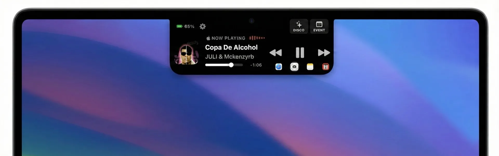
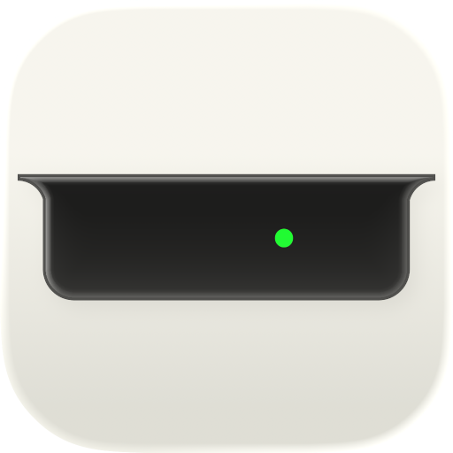

Batería
Avisos de nivel con estilo, justo cuando los necesitas.
Nuevo · v1.8 — Liquid Glass
VibeNotch transforma la cámara de tu MacBook en una isla dinámica: música con portadas reales, calendario, teleprompter y alertas inteligentes. Ahora fundida en cristal líquido.
Pasa el cursor —o toca— el notch. La experiencia real en macOS es aún más fluida.
«En solo tres días desde su lanzamiento en la App Store, VibeNotch se colocó como la app de pago número 1 para Mac en varios países. Y no es casualidad. Está bien hecha, pensada con cabeza y, sobre todo: no viene de una gran empresa.»— Albert Llambrich, iSenaCode
«El renacimiento de la interfaz con VibeNotch. Busca convertirse en un centro de control predictivo, aprovechando los nuevos chips para animaciones fluidas imposibles de igualar.»— Macquero
Novedad estrella · 1.8.0
El nuevo notch Liquid Glass se mantiene negro sobre el notch real y se difumina a cristal translúcido en el borde más alejado, al estilo de la nueva Dynamic Island de Siri. Idéntico con click y con hover, y translúcido en modo Disco. ¿Prefieres el clásico look sólido? Cámbialo cuando quieras en Ajustes › Apariencia.
Arrastra el control para comparar. Con fallback automático para sistemas antiguos.
Isla multimedia
Controla Apple Music y Spotify directamente desde el notch. Desde la 1.8.0, la carátula llega directa de tu reproductor —la URL de artwork de Spotify y el artwork incrustado de Apple Music— y la búsqueda en catálogo queda solo como respaldo.

Eventos y recordatorios
Consulta tus próximas citas y marca recordatorios como completados desde el propio notch. Las notificaciones de recordatorio llegan con campana pulsante y título con desplazamiento suave: imposible que se te escape nada.

Teleprompter
Pega cualquier texto y léelo como ticker fluido o como créditos de cine, justo al lado de la cámara. Perfecto para presentaciones, grabaciones y videollamadas.
Alertas inteligentes
Notificaciones elegantes para todo lo que importa, cada una activable individualmente. Sin ruido: solo lo que tú decidas.
Avisos de nivel con estilo, justo cuando los necesitas.
Conecta el cable y la isla responde al instante.
Tus AirPods y dispositivos, anunciados con elegancia.
Cambios de red visibles sin abrir Ajustes.
Activa un modo de concentración y el notch lo refleja.
¿Altavoz o auriculares? Siempre sabrás por dónde suena.
Modo silencio dentro y fuera, confirmado al momento.
Cada copia, confirmada con una animación sutil.
Modos con personalidad
La isla late al ritmo de tu música, con colores extraídos de la portada del álbum. Y con Liquid Glass, ahora también translúcida mientras baila.
¿Tu Mac no tiene notch físico? Una isla flotante que funciona en cualquier pantalla: iMac, monitores externos y configuraciones multipantalla.
Eficiencia 1.8.0
Gran limpieza energética: el sondeo del portapapeles se detiene cuando no hace falta, los timers agrupan los despertares de CPU y el waveform se renderiza a la mitad de frecuencia sin diferencia visible. Los wakeups en reposo bajan sustancialmente.
Swift nativo, sin frameworks pesados. Impacto en batería prácticamente nulo, incluso en uso intensivo.
Changelog
Publicada el 9 de junio de 2026.
El área sobre el notch real se mantiene negra y se difumina a cristal en el borde más alejado, al estilo de la nueva Dynamic Island de Siri. Idéntico con click y con hover, translúcido en modo Disco y con fallback para sistemas antiguos.
La carátula llega directa del reproductor —la URL de artwork de Spotify y el artwork incrustado de Apple Music— en vez de una búsqueda en catálogo que a veces mostraba otro álbum. La búsqueda queda solo como respaldo.
El sondeo del portapapeles se detiene por completo cuando no hace falta; todos los timers tienen tolerancias para que macOS agrupe los despertares de CPU; el waveform se renderiza a la mitad de frecuencia sin diferencia visible.
El progreso de reproducción ya no re-renderiza toda la isla cada segundo: solo la barra de progreso. Reproducción más fluida que nunca.
Contenido de la isla dividido en archivos enfocados; los controladores de ventana limpian timers y observers del sistema al cambiar de pantalla, con varios arreglos de ciclo de vida.
Nuevas cadenas en español, inglés y chino simplificado.
Galería







El notch de tu Mac, reinventado.
4,99 € · pago único, tuya para siempre
Sin suscripciones, sin cargos ocultos, sin trucos. Tu información nunca sale de tu Mac.
Preguntas frecuentes
VibeNotch es compatible con todos los MacBook Air y MacBook Pro con notch físico, y también con Macs sin notch gracias al Modo Burbuja: una isla flotante que funciona en cualquier pantalla, incluidos monitores externos. Requiere macOS 14.0 o superior.
No. VibeNotch está escrita en Swift nativo y optimizada hasta la obsesión: 0% de CPU en reposo, menos de 35 MB de RAM y, desde la 1.8.0, muchos menos despertares de CPU. No notarás ninguna diferencia en la autonomía de tu Mac.
Apple Music, Spotify y cualquier aplicación que use los controles de reproducción nativos de macOS (como YouTube en Safari o Chrome). Desde la 1.8.0, las portadas llegan directas del reproductor: se acabaron las carátulas equivocadas.
El nuevo aspecto por defecto de la isla: negro sobre el notch real y cristal translúcido en los bordes, inspirado en la nueva Dynamic Island de Siri. Si prefieres el clásico look sólido, puedes cambiarlo cuando quieras en Ajustes › Apariencia.
Sí. Odiamos las suscripciones tanto como tú: un único pago de 4,99 € y tendrás acceso a todas las funciones y actualizaciones futuras para siempre.
VibeNotch no recopila, almacena ni comparte datos personales. Sin telemetría, sin analytics, sin servidores propios. El único uso de red es obtener carátulas mediante la API pública de iTunes cuando no hay artwork local. Lee la política completa.
La familia
Descarga VibeNotch y convierte la cámara de tu MacBook en lo mejor de tu pantalla.